a slanted mountain bicycle on the road in front of a building
→ a slanted [rusty] mountain bicycle on the road in front of a building
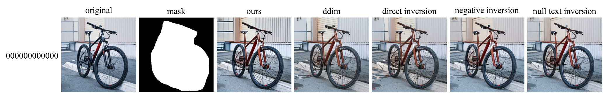
| 지표 ↓ / 모델 → | Ours | w/ DDIM | w/ Direct Inversion | w/ Negative Inversion | w/ Null-text Inversion |
|---|---|---|---|---|---|
| Structure Distance ↑ | 0.9275 | 0.9166 | 0.9111 | 0.9282 | 0.9288 |
| Background Preservation (PSNR ↑) | 22.7554 | 25.2175 | 24.2696 | 24.6544 | 25.0999 |
| Background Preservation (SSIM ↑) | 0.8166 | 0.8692 | 0.8711 | 0.8700 | 0.8720 |
| Background Preservation (LPIPS ↓) | 0.0882 | 0.0639 | 0.0647 | 0.0558 | 0.0527 |
a [round] cake with orange frosting on a wooden plate
→ a [square] cake with orange frosting on a wooden plate
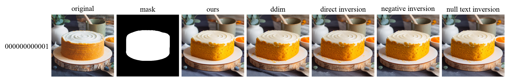
| 지표 ↓ / 모델 → | Ours | w/ DDIM | w/ Direct Inversion | w/ Negative Inversion | w/ Null-text Inversion |
|---|---|---|---|---|---|
| Structure Distance ↑ | 0.8751 | 0.8635 | 0.8676 | 0.8640 | 0.8580 |
| Background Preservation (PSNR ↑) | 21.3392 | 21.2523 | 21.1786 | 21.5494 | 21.3817 |
| Background Preservation (SSIM ↑) | 0.8140 | 0.8062 | 0.8109 | 0.8118 | 0.8074 |
| Background Preservation (LPIPS ↓) | 0.1308 | 0.1393 | 0.1315 | 0.1376 | 0.1436 |
a [cat] sitting on a wooden chair
→ a [dog] sitting on a wooden chair
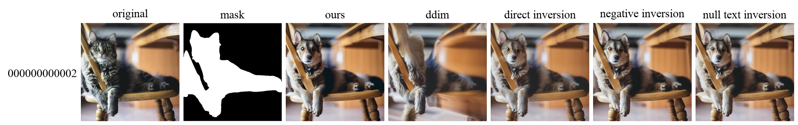
| 지표 ↓ / 모델 → | Ours | w/ DDIM | w/ Direct Inversion | w/ Negative Inversion | w/ Null-text Inversion |
|---|---|---|---|---|---|
| Structure Distance ↑ | 0.6832 | 0.6078 | 0.7263 | 0.6760 | 0.6681 |
| Background Preservation (PSNR ↑) | 26.7508 | 21.4967 | 24.8663 | 26.7102 | 26.7121 |
| Background Preservation (SSIM ↑) | 0.9399 | 0.8513 | 0.9325 | 0.9385 | 0.9398 |
| Background Preservation (LPIPS ↓) | 0.0409 | 0.1587 | 0.0487 | 0.0442 | 0.0456 |
blue light, a black and white [cat] is playing with a flower
→ blue light, a black and white [dog] is playing with a flower
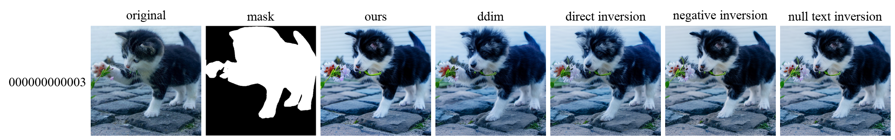
| 지표 ↓ / 모델 → | Ours | w/ DDIM | w/ Direct Inversion | w/ Negative Inversion | w/ Null-text Inversion |
|---|---|---|---|---|---|
| Structure Distance ↑ | 0.7875 | 0.7587 | 0.7745 | 0.7882 | 0.7943 |
| Background Preservation (PSNR ↑) | 23.4127 | 24.4000 | 24.1255 | 24.5422 | 23.9642 |
| Background Preservation (SSIM ↑) | 0.8508 | 0.8532 | 0.8524 | 0.8590 | 0.8557 |
| Background Preservation (LPIPS ↓) | 0.0644 | 0.0647 | 0.0646 | 0.0635 | 0.0648 |
a cat sitting next to a mirror
→ a [silver] cat [sculpture] sitting next to a mirror
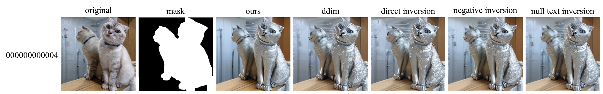
| 지표 ↓ / 모델 → | Ours | w/ DDIM | w/ Direct Inversion | w/ Negative Inversion | w/ Null-text Inversion |
|---|---|---|---|---|---|
| Structure Distance ↑ | 0.7004 | 0.6849 | 0.7007 | 0.7102 | 0.6979 |
| Background Preservation (PSNR ↑) | 24.3971 | 25.4855 | 25.6334 | 24.8969 | 25.1440 |
| Background Preservation (SSIM ↑) | 0.9027 | 0.9097 | 0.9072 | 0.9079 | 0.9103 |
| Background Preservation (LPIPS ↓) | 0.0759 | 0.0741 | 0.0707 | 0.0839 | 0.0807 |
an [orange] cat sitting on top of a fence
→ an [black] cat sitting on top of a fence
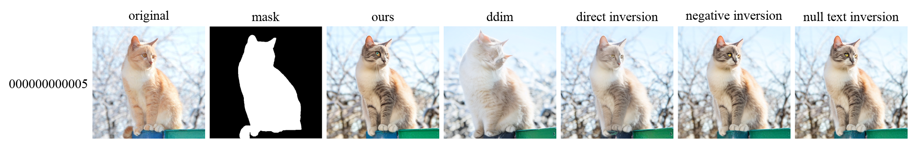
| 지표 ↓ / 모델 → | Ours | w/ DDIM | w/ Direct Inversion | w/ Negative Inversion | w/ Null-text Inversion |
|---|---|---|---|---|---|
| Structure Distance ↑ | 0.8723 | 0.8275 | 0.8959 | 0.8796 | 0.8873 |
| Background Preservation (PSNR ↑) | 22.8284 | 24.6681 | 24.5917 | 23.6799 | 23.0004 |
| Background Preservation (SSIM ↑) | 0.9161 | 0.8966 | 0.9204 | 0.9218 | 0.9148 |
| Background Preservation (LPIPS ↓) | 0.0535 | 0.0743 | 0.0508 | 0.0470 | 0.0536 |
a cup of coffee with drawing of [tulip] putted on the wooden table
→ a cup of coffee with drawing of [lion] putted on the wooden table
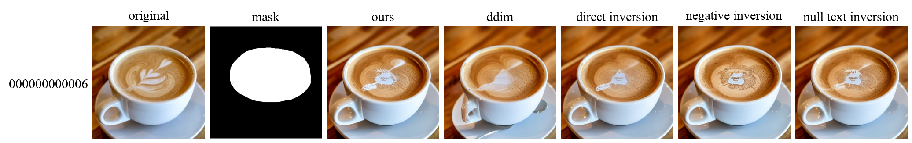
| 지표 ↓ / 모델 → | Ours | w/ DDIM | w/ Direct Inversion | w/ Negative Inversion | w/ Null-text Inversion |
|---|---|---|---|---|---|
| Structure Distance ↑ | 0.9460 | 0.9261 | 0.9361 | 0.9350 | 0.9313 |
| Background Preservation (PSNR ↑) | 29.0153 | 22.8091 | 29.1110 | 27.8505 | 28.1465 |
| Background Preservation (SSIM ↑) | 0.9427 | 0.8776 | 0.9425 | 0.9239 | 0.9279 |
| Background Preservation (LPIPS ↓) | 0.0336 | 0.0996 | 0.0349 | 0.0433 | 0.0404 |
a german shepherd dog stands on the grass with mouth [closed]
→ a german shepherd dog stands on the grass with mouth [opened]
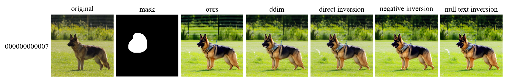
| 지표 ↓ / 모델 → | Ours | w/ DDIM | w/ Direct Inversion | w/ Negative Inversion | w/ Null-text Inversion |
|---|---|---|---|---|---|
| Structure Distance ↑ | 0.9237 | 0.9296 | 0.9265 | 0.9227 | 0.9190 |
| Background Preservation (PSNR ↑) | 18.3965 | 19.6667 | 19.8809 | 18.4386 | 18.2679 |
| Background Preservation (SSIM ↑) | 0.5353 | 0.6248 | 0.6247 | 0.5863 | 0.5703 |
| Background Preservation (LPIPS ↓) | 0.2689 | 0.1657 | 0.1664 | 0.1801 | 0.1945 |
a golden retriever [holding a flower] sitting on the ground in front of fence
→ a golden retriever sitting on the ground in front of fence
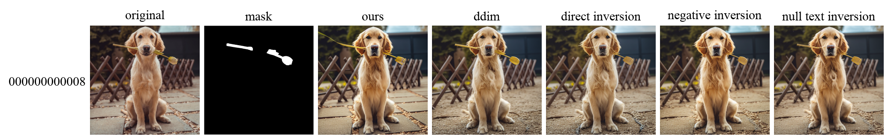
| 지표 ↓ / 모델 → | Ours | w/ DDIM | w/ Direct Inversion | w/ Negative Inversion | w/ Null-text Inversion |
|---|---|---|---|---|---|
| Structure Distance ↑ | 0.9068 | 0.9119 | 0.9070 | 0.8927 | 0.8978 |
| Background Preservation (PSNR ↑) | 20.9111 | 20.7426 | 20.5981 | 20.9011 | 21.2394 |
| Background Preservation (SSIM ↑) | 0.7828 | 0.7460 | 0.7508 | 0.7757 | 0.7773 |
| Background Preservation (LPIPS ↓) | 0.1487 | 0.1755 | 0.1612 | 0.1462 | 0.1407 |
a [dog] is laying down on a white background
→ a [lion] is laying down on a white background
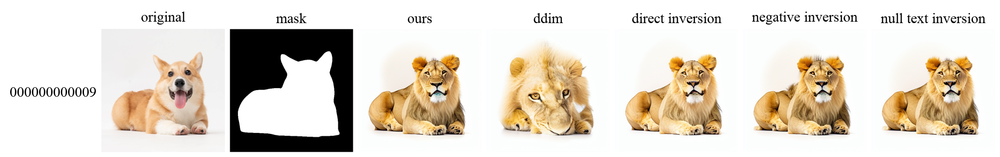
| 지표 ↓ / 모델 → | Ours | w/ DDIM | w/ Direct Inversion | w/ Negative Inversion | w/ Null-text Inversion |
|---|---|---|---|---|---|
| Structure Distance ↑ | 0.3980 | 0.4351 | 0.4277 | 0.4004 | 0.4110 |
| Background Preservation (PSNR ↑) | 27.0542 | 22.3607 | 27.6545 | 26.7090 | 27.7155 |
| Background Preservation (SSIM ↑) | 0.9869 | 0.9543 | 0.9899 | 0.9840 | 0.9890 |
| Background Preservation (LPIPS ↓) | 0.0149 | 0.0592 | 0.0109 | 0.0166 | 0.0118 |
photo of a [goat] and a cat standing on rocks near the ocean
→ photo of a [horse] and a cat standing on rocks near the ocean
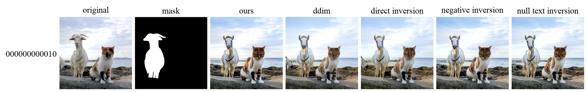
| 지표 ↓ / 모델 → | Ours | w/ DDIM | w/ Direct Inversion | w/ Negative Inversion | w/ Null-text Inversion |
|---|---|---|---|---|---|
| Structure Distance ↑ | 0.8668 | 0.8317 | 0.8468 | 0.8605 | 0.8636 |
| Background Preservation (PSNR ↑) | 22.1939 | 23.0884 | 22.9360 | 22.4662 | 22.4064 |
| Background Preservation (SSIM ↑) | 0.7803 | 0.7844 | 0.7797 | 0.7792 | 0.7793 |
| Background Preservation (LPIPS ↓) | 0.1147 | 0.1236 | 0.1269 | 0.1180 | 0.1181 |
a [colorful] bird standing on a branch
→ a [red] bird standing on a branch
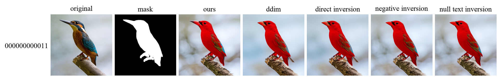
| 지표 ↓ / 모델 → | Ours | w/ DDIM | w/ Direct Inversion | w/ Negative Inversion | w/ Null-text Inversion |
|---|---|---|---|---|---|
| Structure Distance ↑ | 0.7528 | 0.7434 | 0.7479 | 0.7403 | 0.7376 |
| Background Preservation (PSNR ↑) | 23.5359 | 21.1468 | 22.5413 | 23.8898 | 24.2066 |
| Background Preservation (SSIM ↑) | 0.8944 | 0.9081 | 0.9093 | 0.9096 | 0.9093 |
| Background Preservation (LPIPS ↓) | 0.0932 | 0.0590 | 0.0567 | 0.0615 | 0.0624 |
meat [balls] on white plate
→ meat [sushi] on white plate
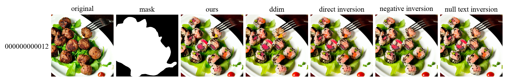
| 지표 ↓ / 모델 → | Ours | w/ DDIM | w/ Direct Inversion | w/ Negative Inversion | w/ Null-text Inversion |
|---|---|---|---|---|---|
| Structure Distance ↑ | 0.7080 | 0.6976 | 0.6790 | 0.6873 | 0.6864 |
| Background Preservation (PSNR ↑) | 26.7799 | 27.2708 | 27.6752 | 27.3733 | 27.5376 |
| Background Preservation (SSIM ↑) | 0.9451 | 0.9442 | 0.9441 | 0.9450 | 0.9450 |
| Background Preservation (LPIPS ↓) | 0.0291 | 0.0296 | 0.0274 | 0.0278 | 0.0280 |
three white [dumplings] on brown bowl
→ three white [sushi] on brown bowl
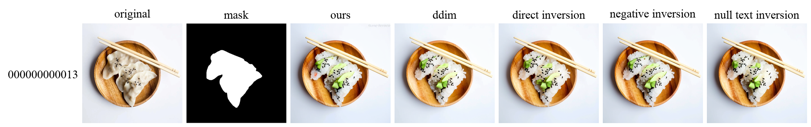
| 지표 ↓ / 모델 → | Ours | w/ DDIM | w/ Direct Inversion | w/ Negative Inversion | w/ Null-text Inversion |
|---|---|---|---|---|---|
| Structure Distance ↑ | 0.8257 | 0.8172 | 0.8336 | 0.8149 | 0.8370 |
| Background Preservation (PSNR ↑) | 24.3371 | 25.5283 | 25.3076 | 25.2254 | 24.9525 |
| Background Preservation (SSIM ↑) | 0.8912 | 0.8997 | 0.8962 | 0.9001 | 0.8994 |
| Background Preservation (LPIPS ↓) | 0.0549 | 0.0482 | 0.0481 | 0.0491 | 0.0472 |
a man with his hands [hanging down] standing by a house
→ a man with his hands [rasing] standing by a house
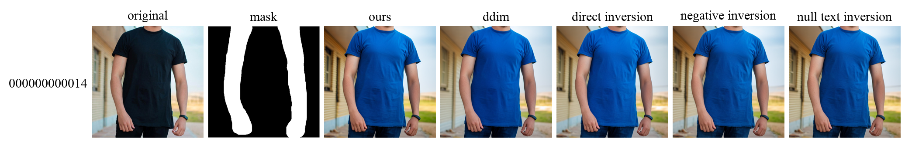
| 지표 ↓ / 모델 → | Ours | w/ DDIM | w/ Direct Inversion | w/ Negative Inversion | w/ Null-text Inversion |
|---|---|---|---|---|---|
| Structure Distance ↑ | 0.9157 | 0.9119 | 0.9131 | 0.9156 | 0.9159 |
| Background Preservation (PSNR ↑) | 14.6574 | 15.2175 | 14.0742 | 14.8198 | 15.0797 |
| Background Preservation (SSIM ↑) | 0.7382 | 0.7466 | 0.7420 | 0.7553 | 0.7587 |
| Background Preservation (LPIPS ↓) | 0.1801 | 0.1584 | 0.1708 | 0.1706 | 0.1697 |
white plate with [fruits] on it
→ white plate with [pizza] on it
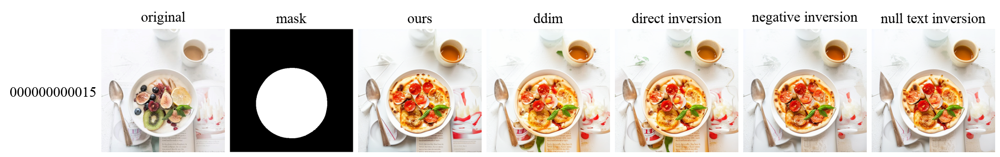
| 지표 ↓ / 모델 → | Ours | w/ DDIM | w/ Direct Inversion | w/ Negative Inversion | w/ Null-text Inversion |
|---|---|---|---|---|---|
| Structure Distance ↑ | 0.6718 | 0.7311 | 0.7370 | 0.6788 | 0.7151 |
| Background Preservation (PSNR ↑) | 21.8683 | 22.0449 | 21.1976 | 23.5857 | 23.2968 |
| Background Preservation (SSIM ↑) | 0.8825 | 0.8878 | 0.8678 | 0.8921 | 0.8878 |
| Background Preservation (LPIPS ↓) | 0.1144 | 0.1025 | 0.1337 | 0.0824 | 0.0918 |
a plate with [steak] on it
→ a plate with [salmon] on it
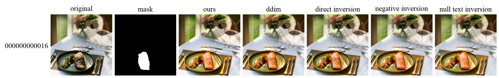
| 지표 ↓ / 모델 → | Ours | w/ DDIM | w/ Direct Inversion | w/ Negative Inversion | w/ Null-text Inversion |
|---|---|---|---|---|---|
| Structure Distance ↑ | 0.8595 | 0.8658 | 0.8737 | 0.8596 | 0.8565 |
| Background Preservation (PSNR ↑) | 19.1172 | 20.6351 | 21.3301 | 19.5632 | 19.7036 |
| Background Preservation (SSIM ↑) | 0.8157 | 0.8405 | 0.8411 | 0.8347 | 0.8322 |
| Background Preservation (LPIPS ↓) | 0.1435 | 0.1187 | 0.1252 | 0.1233 | 0.1240 |
photo of a statue [in front view]
→ photo of a statue [in side view]
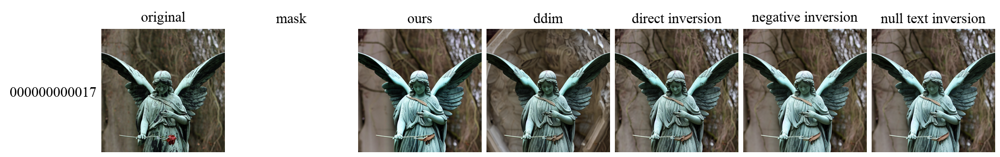
| 지표 ↓ / 모델 → | Ours | w/ DDIM | w/ Direct Inversion | w/ Negative Inversion | w/ Null-text Inversion |
|---|---|---|---|---|---|
| Structure Distance ↑ | 0.8913 | 0.8427 | 0.9159 | 0.9143 | 0.9089 |
| Background Preservation (PSNR ↑) | inf | inf | inf | inf | inf |
| Background Preservation (SSIM ↑) | 1.0000 | 1.0000 | 1.0000 | 1.0000 | 1.0000 |
| Background Preservation (LPIPS ↓) | 0.0000 | 0.0000 | 0.0000 | 0.0000 | 0.0000 |
the statue of liberty holding a [torch]
→ the statue of liberty holding a [flower]
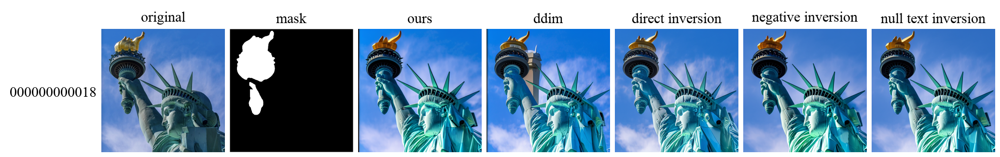
| 지표 ↓ / 모델 → | Ours | w/ DDIM | w/ Direct Inversion | w/ Negative Inversion | w/ Null-text Inversion |
|---|---|---|---|---|---|
| Structure Distance ↑ | 0.8644 | 0.8614 | 0.8594 | 0.8682 | 0.8713 |
| Background Preservation (PSNR ↑) | 16.3947 | 15.4558 | 16.8187 | 17.1613 | 16.9616 |
| Background Preservation (SSIM ↑) | 0.7250 | 0.6721 | 0.7441 | 0.7524 | 0.7521 |
| Background Preservation (LPIPS ↓) | 0.1780 | 0.2138 | 0.1721 | 0.1734 | 0.1728 |
white [tiger] on brown ground
→ white [cat] on brown ground
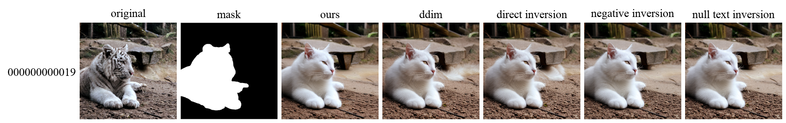
| 지표 ↓ / 모델 → | Ours | w/ DDIM | w/ Direct Inversion | w/ Negative Inversion | w/ Null-text Inversion |
|---|---|---|---|---|---|
| Structure Distance ↑ | 0.4714 | 0.4790 | 0.4785 | 0.4773 | 0.4754 |
| Background Preservation (PSNR ↑) | 22.1108 | 21.7004 | 21.8944 | 21.6926 | 21.4288 |
| Background Preservation (SSIM ↑) | 0.7310 | 0.7350 | 0.7489 | 0.7314 | 0.7435 |
| Background Preservation (LPIPS ↓) | 0.1910 | 0.1669 | 0.1621 | 0.1881 | 0.1714 |
two birds sitting on a branch
→ two [origami] birds sitting on a branch
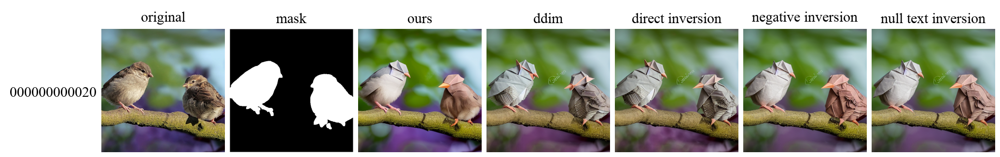
| 지표 ↓ / 모델 → | Ours | w/ DDIM | w/ Direct Inversion | w/ Negative Inversion | w/ Null-text Inversion |
|---|---|---|---|---|---|
| Structure Distance ↑ | 0.7721 | 0.6254 | 0.6177 | 0.6535 | 0.6614 |
| Background Preservation (PSNR ↑) | 20.5259 | 21.6328 | 22.1226 | 21.6916 | 21.7677 |
| Background Preservation (SSIM ↑) | 0.8217 | 0.8496 | 0.8565 | 0.8533 | 0.8525 |
| Background Preservation (LPIPS ↓) | 0.1115 | 0.1136 | 0.1049 | 0.1063 | 0.1040 |
two parrots sitting on a stick, city street background
→ two [kissing] parrots sitting on a stick, city street background
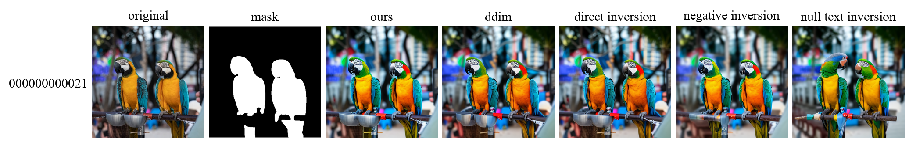
| 지표 ↓ / 모델 → | Ours | w/ DDIM | w/ Direct Inversion | w/ Negative Inversion | w/ Null-text Inversion |
|---|---|---|---|---|---|
| Structure Distance ↑ | 0.9662 | 0.9631 | 0.9589 | 0.9544 | 0.9350 |
| Background Preservation (PSNR ↑) | 21.3327 | 21.4903 | 21.4105 | 21.8910 | 19.0209 |
| Background Preservation (SSIM ↑) | 0.8797 | 0.8575 | 0.8640 | 0.8606 | 0.8029 |
| Background Preservation (LPIPS ↓) | 0.1009 | 0.1321 | 0.1228 | 0.1319 | 0.1837 |
an orange van with [surfboards] on top
→ an orange van with [flowers] on top
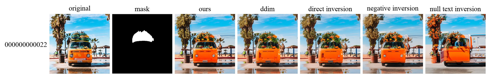
| 지표 ↓ / 모델 → | Ours | w/ DDIM | w/ Direct Inversion | w/ Negative Inversion | w/ Null-text Inversion |
|---|---|---|---|---|---|
| Structure Distance ↑ | 0.8511 | 0.6988 | 0.7191 | 0.7942 | 0.5878 |
| Background Preservation (PSNR ↑) | 16.8183 | 17.0880 | 16.9760 | 16.0568 | 13.9978 |
| Background Preservation (SSIM ↑) | 0.6559 | 0.6654 | 0.6588 | 0.6276 | 0.5318 |
| Background Preservation (LPIPS ↓) | 0.1853 | 0.1913 | 0.1970 | 0.2331 | 0.3503 |
a [gray] horse in the field
→ a [white] horse in the field
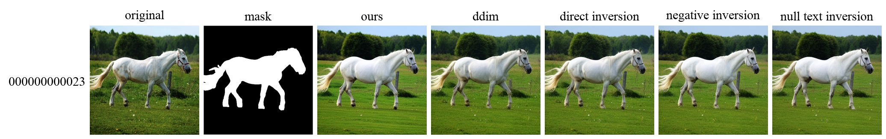
| 지표 ↓ / 모델 → | Ours | w/ DDIM | w/ Direct Inversion | w/ Negative Inversion | w/ Null-text Inversion |
|---|---|---|---|---|---|
| Structure Distance ↑ | 0.9123 | 0.9453 | 0.9429 | 0.9217 | 0.9106 |
| Background Preservation (PSNR ↑) | 21.5958 | 22.6676 | 22.1585 | 21.9873 | 21.6591 |
| Background Preservation (SSIM ↑) | 0.6689 | 0.6881 | 0.6859 | 0.6819 | 0.6732 |
| Background Preservation (LPIPS ↓) | 0.1682 | 0.1208 | 0.1143 | 0.1499 | 0.1682 |
a [white] horse running in the sunset
→ a [golden] horse running in the sunset
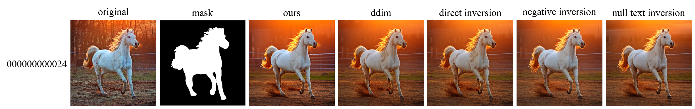
| 지표 ↓ / 모델 → | Ours | w/ DDIM | w/ Direct Inversion | w/ Negative Inversion | w/ Null-text Inversion |
|---|---|---|---|---|---|
| Structure Distance ↑ | 0.8676 | 0.8653 | 0.8679 | 0.8800 | 0.8577 |
| Background Preservation (PSNR ↑) | 19.4360 | 19.7193 | 19.9625 | 20.4342 | 19.7263 |
| Background Preservation (SSIM ↑) | 0.5768 | 0.5765 | 0.5844 | 0.5950 | 0.5865 |
| Background Preservation (LPIPS ↓) | 0.2842 | 0.2787 | 0.2682 | 0.2691 | 0.2783 |
a [woman] with blue hair wearing a shirt
→ a [storm-trooper] with blue hair wearing a shirt
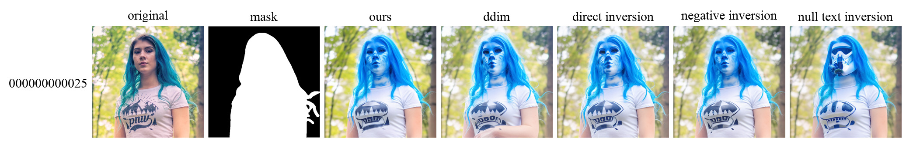
| 지표 ↓ / 모델 → | Ours | w/ DDIM | w/ Direct Inversion | w/ Negative Inversion | w/ Null-text Inversion |
|---|---|---|---|---|---|
| Structure Distance ↑ | 0.8902 | 0.8737 | 0.8882 | 0.9024 | 0.7633 |
| Background Preservation (PSNR ↑) | 27.0013 | 24.8732 | 24.7370 | 25.8045 | 25.1318 |
| Background Preservation (SSIM ↑) | 0.9335 | 0.9246 | 0.9290 | 0.9317 | 0.9259 |
| Background Preservation (LPIPS ↓) | 0.0508 | 0.0603 | 0.0627 | 0.0593 | 0.0647 |
a yellow bird with a red beak sitting on a branch
→ a [crochet] bird with a red beak sitting on a branch
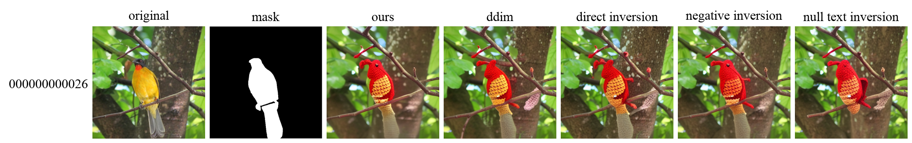
| 지표 ↓ / 모델 → | Ours | w/ DDIM | w/ Direct Inversion | w/ Negative Inversion | w/ Null-text Inversion |
|---|---|---|---|---|---|
| Structure Distance ↑ | 0.5601 | 0.5228 | 0.5590 | 0.5714 | 0.5153 |
| Background Preservation (PSNR ↑) | 24.7713 | 23.6518 | 23.9283 | 24.7500 | 23.6581 |
| Background Preservation (SSIM ↑) | 0.8745 | 0.8540 | 0.8424 | 0.8844 | 0.8604 |
| Background Preservation (LPIPS ↓) | 0.1486 | 0.1482 | 0.1457 | 0.1156 | 0.1379 |
a [opened] eyes cat sitting on wooden floor
→ a [closed] eyes cat sitting on wooden floor
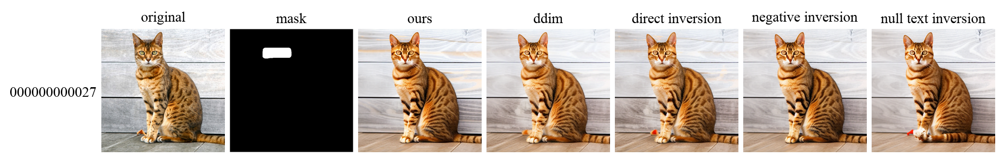
| 지표 ↓ / 모델 → | Ours | w/ DDIM | w/ Direct Inversion | w/ Negative Inversion | w/ Null-text Inversion |
|---|---|---|---|---|---|
| Structure Distance ↑ | 0.8810 | 0.8797 | 0.9018 | 0.8912 | 0.8717 |
| Background Preservation (PSNR ↑) | 20.6028 | 21.0603 | 21.4176 | 20.6628 | 19.1770 |
| Background Preservation (SSIM ↑) | 0.6112 | 0.6233 | 0.6348 | 0.6251 | 0.5965 |
| Background Preservation (LPIPS ↓) | 0.2279 | 0.2190 | 0.2088 | 0.2104 | 0.2369 |
white flowers on a tree branch with blue sky background
→ [an oil painting of] white flowers on a tree branch with blue sky background
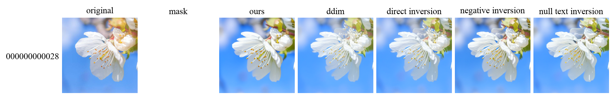
| 지표 ↓ / 모델 → | Ours | w/ DDIM | w/ Direct Inversion | w/ Negative Inversion | w/ Null-text Inversion |
|---|---|---|---|---|---|
| Structure Distance ↑ | 0.9129 | 0.9119 | 0.9230 | 0.9095 | 0.9052 |
| Background Preservation (PSNR ↑) | inf | inf | inf | inf | inf |
| Background Preservation (SSIM ↑) | 1.0000 | 1.0000 | 1.0000 | 1.0000 | 1.0000 |
| Background Preservation (LPIPS ↓) | 0.0000 | 0.0000 | 0.0000 | 0.0000 | 0.0000 |
a [kitten] walking through the grass
→ a [duck] walking through the grass
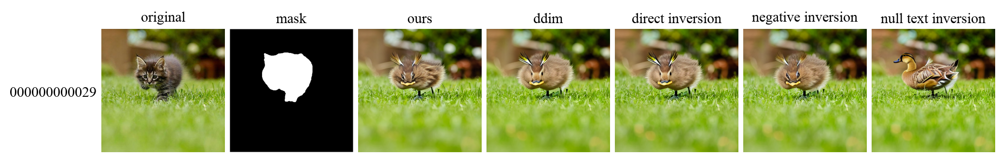
| 지표 ↓ / 모델 → | Ours | w/ DDIM | w/ Direct Inversion | w/ Negative Inversion | w/ Null-text Inversion |
|---|---|---|---|---|---|
| Structure Distance ↑ | 0.6372 | 0.5859 | 0.5702 | 0.6423 | 0.4857 |
| Background Preservation (PSNR ↑) | 23.9821 | 24.4292 | 24.0519 | 25.6029 | 23.0190 |
| Background Preservation (SSIM ↑) | 0.8546 | 0.8623 | 0.8510 | 0.8657 | 0.8254 |
| Background Preservation (LPIPS ↓) | 0.0749 | 0.0706 | 0.0892 | 0.0735 | 0.1159 |
a [stream] in a lush green forest with rocks
→ a [road] in a lush green forest with rocks
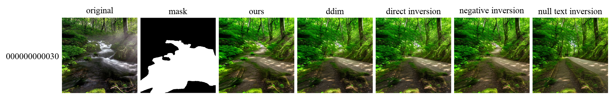
| 지표 ↓ / 모델 → | Ours | w/ DDIM | w/ Direct Inversion | w/ Negative Inversion | w/ Null-text Inversion |
|---|---|---|---|---|---|
| Structure Distance ↑ | 0.6013 | 0.5476 | 0.5462 | 0.5713 | 0.5052 |
| Background Preservation (PSNR ↑) | 17.8244 | 17.8396 | 17.8680 | 17.5964 | 17.3838 |
| Background Preservation (SSIM ↑) | 0.6000 | 0.5953 | 0.5980 | 0.5934 | 0.5823 |
| Background Preservation (LPIPS ↓) | 0.1976 | 0.1951 | 0.1931 | 0.2003 | 0.2023 |
a [red] rose in the dark
→ a [blue] rose in the dark
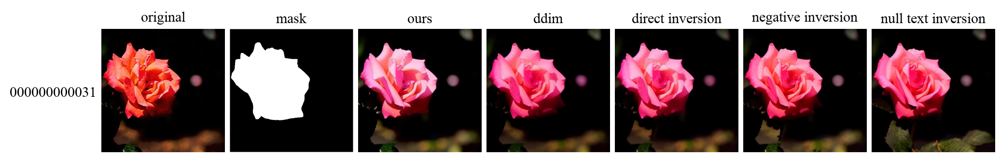
| 지표 ↓ / 모델 → | Ours | w/ DDIM | w/ Direct Inversion | w/ Negative Inversion | w/ Null-text Inversion |
|---|---|---|---|---|---|
| Structure Distance ↑ | 0.9007 | 0.9023 | 0.9009 | 0.9177 | 0.8190 |
| Background Preservation (PSNR ↑) | 32.5303 | 32.3350 | 35.0255 | 33.1013 | 30.1545 |
| Background Preservation (SSIM ↑) | 0.9439 | 0.9336 | 0.9482 | 0.9411 | 0.9158 |
| Background Preservation (LPIPS ↓) | 0.0668 | 0.0696 | 0.0580 | 0.0799 | 0.1220 |
a group of [pink] flowers hanging from a tree
→ a group of [red] flowers hanging from a tree
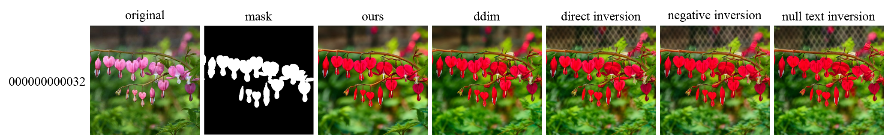
| 지표 ↓ / 모델 → | Ours | w/ DDIM | w/ Direct Inversion | w/ Negative Inversion | w/ Null-text Inversion |
|---|---|---|---|---|---|
| Structure Distance ↑ | 0.8750 | 0.8923 | 0.8431 | 0.8428 | 0.8231 |
| Background Preservation (PSNR ↑) | 22.3520 | 21.5863 | 21.9215 | 21.7672 | 21.2416 |
| Background Preservation (SSIM ↑) | 0.8065 | 0.7465 | 0.6922 | 0.7348 | 0.7076 |
| Background Preservation (LPIPS ↓) | 0.1171 | 0.1575 | 0.2329 | 0.2146 | 0.2339 |
a cartoon of a [boy] walking his dog in autumn
→ a cartoon of a [girl] walking his dog in autumn
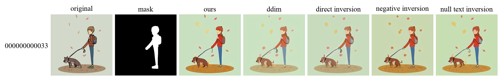
| 지표 ↓ / 모델 → | Ours | w/ DDIM | w/ Direct Inversion | w/ Negative Inversion | w/ Null-text Inversion |
|---|---|---|---|---|---|
| Structure Distance ↑ | 0.8688 | 0.8348 | 0.8331 | 0.8385 | 0.8427 |
| Background Preservation (PSNR ↑) | 22.2507 | 22.8900 | 23.4719 | 21.1899 | 21.1556 |
| Background Preservation (SSIM ↑) | 0.9105 | 0.9149 | 0.9168 | 0.9081 | 0.9055 |
| Background Preservation (LPIPS ↓) | 0.1064 | 0.1100 | 0.0908 | 0.1103 | 0.1158 |
a mother duck and her babies are standing near the water
→ [a sketch painting of] a mother duck and her babies are standing near the water
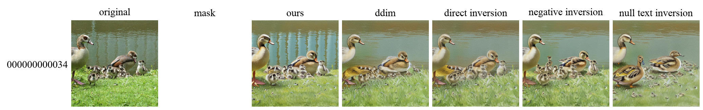
| 지표 ↓ / 모델 → | Ours | w/ DDIM | w/ Direct Inversion | w/ Negative Inversion | w/ Null-text Inversion |
|---|---|---|---|---|---|
| Structure Distance ↑ | 0.8869 | 0.8334 | 0.8892 | 0.8935 | 0.7654 |
| Background Preservation (PSNR ↑) | inf | inf | inf | inf | inf |
| Background Preservation (SSIM ↑) | 1.0000 | 1.0000 | 1.0000 | 1.0000 | 1.0000 |
| Background Preservation (LPIPS ↓) | 0.0000 | 0.0000 | 0.0000 | 0.0000 | 0.0000 |
[photograph] - window of the world by jimmy kirk
→ [painting] - window of the world by jimmy kirk
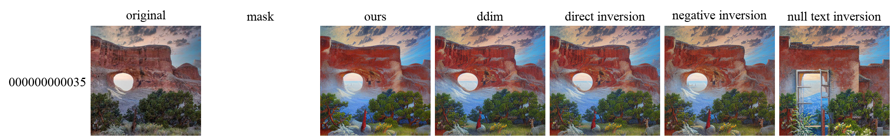
| 지표 ↓ / 모델 → | Ours | w/ DDIM | w/ Direct Inversion | w/ Negative Inversion | w/ Null-text Inversion |
|---|---|---|---|---|---|
| Structure Distance ↑ | 0.7805 | 0.8239 | 0.8198 | 0.8040 | 0.4741 |
| Background Preservation (PSNR ↑) | inf | inf | inf | inf | inf |
| Background Preservation (SSIM ↑) | 1.0000 | 1.0000 | 1.0000 | 1.0000 | 1.0000 |
| Background Preservation (LPIPS ↓) | 0.0000 | 0.0000 | 0.0000 | 0.0000 | 0.0000 |
[smoke]
→ [fire]
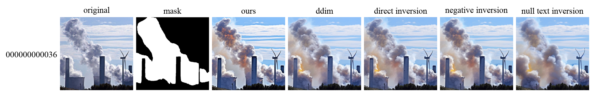
| 지표 ↓ / 모델 → | Ours | w/ DDIM | w/ Direct Inversion | w/ Negative Inversion | w/ Null-text Inversion |
|---|---|---|---|---|---|
| Structure Distance ↑ | 0.8946 | 0.8758 | 0.8771 | 0.8825 | 0.7926 |
| Background Preservation (PSNR ↑) | 24.9267 | 25.2645 | 25.6439 | 26.2290 | 22.6806 |
| Background Preservation (SSIM ↑) | 0.9036 | 0.9093 | 0.9104 | 0.9125 | 0.8838 |
| Background Preservation (LPIPS ↓) | 0.0513 | 0.0433 | 0.0388 | 0.0375 | 0.0685 |
mountain landscape with [flowers and] withered grass
→ mountain landscape with withered grass
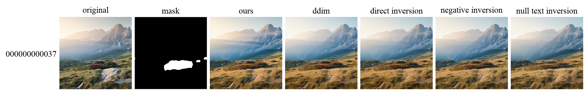
| 지표 ↓ / 모델 → | Ours | w/ DDIM | w/ Direct Inversion | w/ Negative Inversion | w/ Null-text Inversion |
|---|---|---|---|---|---|
| Structure Distance ↑ | 0.9053 | 0.9065 | 0.9024 | 0.9024 | 0.8794 |
| Background Preservation (PSNR ↑) | 20.0727 | 20.2977 | 20.3311 | 20.2299 | 19.9021 |
| Background Preservation (SSIM ↑) | 0.6486 | 0.6581 | 0.6547 | 0.6496 | 0.6392 |
| Background Preservation (LPIPS ↓) | 0.1695 | 0.1728 | 0.1714 | 0.1676 | 0.1915 |
a little girl with [green] eyes and flowers in a blue dress
→ a little girl with [blue] eyes and flowers in a blue dress
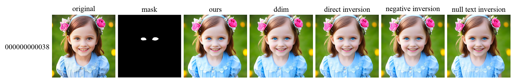
| 지표 ↓ / 모델 → | Ours | w/ DDIM | w/ Direct Inversion | w/ Negative Inversion | w/ Null-text Inversion |
|---|---|---|---|---|---|
| Structure Distance ↑ | 0.9465 | 0.9466 | 0.9476 | 0.9461 | 0.9301 |
| Background Preservation (PSNR ↑) | 22.3098 | 22.1554 | 22.5410 | 22.1443 | 21.7062 |
| Background Preservation (SSIM ↑) | 0.8035 | 0.7941 | 0.8010 | 0.7992 | 0.7771 |
| Background Preservation (LPIPS ↓) | 0.0818 | 0.0851 | 0.0822 | 0.0844 | 0.1056 |
two ducks in the [dirt]
→ two ducks in the [sea]
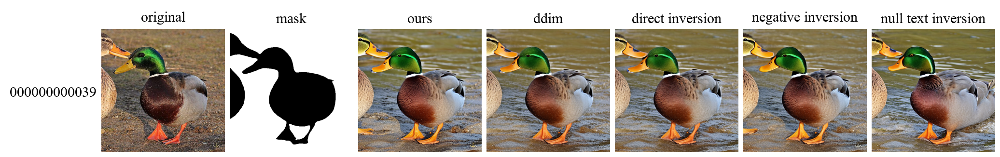
| 지표 ↓ / 모델 → | Ours | w/ DDIM | w/ Direct Inversion | w/ Negative Inversion | w/ Null-text Inversion |
|---|---|---|---|---|---|
| Structure Distance ↑ | 0.8743 | 0.8522 | 0.8482 | 0.8648 | 0.8239 |
| Background Preservation (PSNR ↑) | 20.6431 | 21.1446 | 20.9767 | 20.7326 | 20.3822 |
| Background Preservation (SSIM ↑) | 0.7732 | 0.7799 | 0.7776 | 0.7733 | 0.7670 |
| Background Preservation (LPIPS ↓) | 0.1489 | 0.1401 | 0.1407 | 0.1461 | 0.1587 |
a cat sitting with beads collar
→ a cat sitting with beads collar [putting hands down]
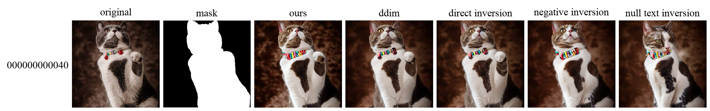
| 지표 ↓ / 모델 → | Ours | w/ DDIM | w/ Direct Inversion | w/ Negative Inversion | w/ Null-text Inversion |
|---|---|---|---|---|---|
| Structure Distance ↑ | 0.8424 | 0.8714 | 0.8739 | 0.8255 | 0.7938 |
| Background Preservation (PSNR ↑) | 30.5289 | 31.5973 | 30.1844 | 32.4475 | 30.6360 |
| Background Preservation (SSIM ↑) | 0.9020 | 0.9360 | 0.9550 | 0.9478 | 0.9555 |
| Background Preservation (LPIPS ↓) | 0.0619 | 0.0429 | 0.0390 | 0.0411 | 0.0409 |
the arctic sky
→ [a castle in] the arctic sky
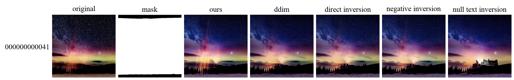
| 지표 ↓ / 모델 → | Ours | w/ DDIM | w/ Direct Inversion | w/ Negative Inversion | w/ Null-text Inversion |
|---|---|---|---|---|---|
| Structure Distance ↑ | 0.7852 | 0.8140 | 0.8019 | 0.8018 | 0.6756 |
| Background Preservation (PSNR ↑) | 29.6836 | 29.1950 | 29.1102 | 29.1590 | 28.8097 |
| Background Preservation (SSIM ↑) | 0.9416 | 0.9374 | 0.9380 | 0.9404 | 0.9367 |
| Background Preservation (LPIPS ↓) | 0.0347 | 0.0380 | 0.0372 | 0.0371 | 0.0432 |
a [black] wolf is standing on rocks in a dark forest
→ a [white] wolf is standing on rocks in a dark forest
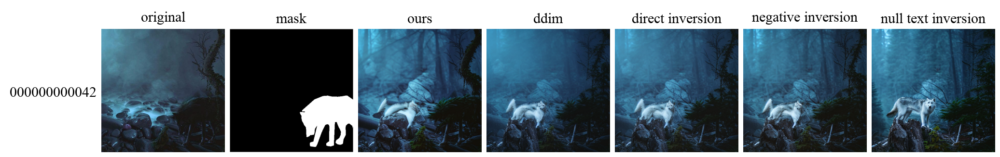
| 지표 ↓ / 모델 → | Ours | w/ DDIM | w/ Direct Inversion | w/ Negative Inversion | w/ Null-text Inversion |
|---|---|---|---|---|---|
| Structure Distance ↑ | 0.5075 | 0.4525 | 0.4263 | 0.4309 | 0.3576 |
| Background Preservation (PSNR ↑) | 21.6063 | 22.5321 | 22.6880 | 23.0399 | 20.6431 |
| Background Preservation (SSIM ↑) | 0.7572 | 0.7944 | 0.7881 | 0.7659 | 0.6842 |
| Background Preservation (LPIPS ↓) | 0.2575 | 0.1720 | 0.1940 | 0.2320 | 0.3022 |
a [large red] cargo ship in the ocean at sunset
→ a [small blue] cargo ship in the ocean at sunset
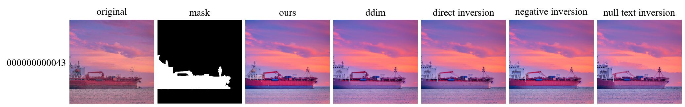
| 지표 ↓ / 모델 → | Ours | w/ DDIM | w/ Direct Inversion | w/ Negative Inversion | w/ Null-text Inversion |
|---|---|---|---|---|---|
| Structure Distance ↑ | 0.8292 | 0.8399 | 0.8083 | 0.8275 | 0.8140 |
| Background Preservation (PSNR ↑) | 23.7938 | 23.6446 | 24.5663 | 24.1416 | 24.2036 |
| Background Preservation (SSIM ↑) | 0.8313 | 0.8372 | 0.8395 | 0.8334 | 0.8350 |
| Background Preservation (LPIPS ↓) | 0.0718 | 0.0624 | 0.0556 | 0.0598 | 0.0571 |
a cat sitting in the [grass]
→ a cat sitting in the [rocks]
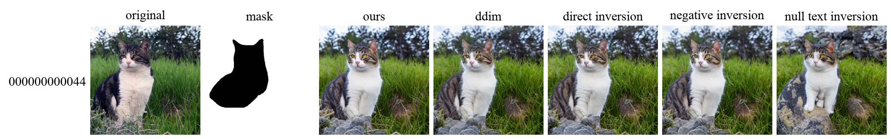
| 지표 ↓ / 모델 → | Ours | w/ DDIM | w/ Direct Inversion | w/ Negative Inversion | w/ Null-text Inversion |
|---|---|---|---|---|---|
| Structure Distance ↑ | 0.8568 | 0.8574 | 0.8598 | 0.8507 | 0.8144 |
| Background Preservation (PSNR ↑) | 22.9257 | 23.3154 | 23.3671 | 22.4102 | 21.7827 |
| Background Preservation (SSIM ↑) | 0.8916 | 0.8938 | 0.8929 | 0.8903 | 0.8812 |
| Background Preservation (LPIPS ↓) | 0.0570 | 0.0558 | 0.0556 | 0.0609 | 0.0733 |
the christmas illustration of a santa's [laughing] face
→ the christmas illustration of a santa's [angry] face
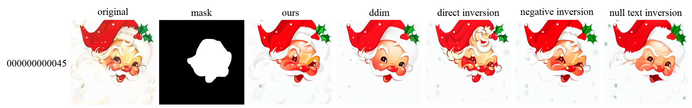
| 지표 ↓ / 모델 → | Ours | w/ DDIM | w/ Direct Inversion | w/ Negative Inversion | w/ Null-text Inversion |
|---|---|---|---|---|---|
| Structure Distance ↑ | 0.6775 | 0.6525 | 0.7337 | 0.7186 | 0.6926 |
| Background Preservation (PSNR ↑) | 23.4722 | 24.1408 | 23.0538 | 22.7774 | 21.9348 |
| Background Preservation (SSIM ↑) | 0.8114 | 0.8260 | 0.8224 | 0.7915 | 0.7936 |
| Background Preservation (LPIPS ↓) | 0.1092 | 0.1256 | 0.1333 | 0.1300 | 0.1423 |
[painting] of clouds in the sky
→ [photo] of clouds in the sky
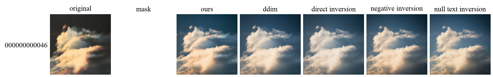
| 지표 ↓ / 모델 → | Ours | w/ DDIM | w/ Direct Inversion | w/ Negative Inversion | w/ Null-text Inversion |
|---|---|---|---|---|---|
| Structure Distance ↑ | 0.7339 | 0.6667 | 0.6403 | 0.6427 | 0.6212 |
| Background Preservation (PSNR ↑) | inf | inf | inf | inf | inf |
| Background Preservation (SSIM ↑) | 1.0000 | 1.0000 | 1.0000 | 1.0000 | 1.0000 |
| Background Preservation (LPIPS ↓) | 0.0000 | 0.0000 | 0.0000 | 0.0000 | 0.0000 |
[rusty] car by jill kaufman
→ [shiny] car by jill kaufman
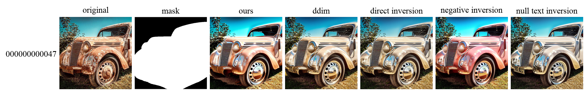
| 지표 ↓ / 모델 → | Ours | w/ DDIM | w/ Direct Inversion | w/ Negative Inversion | w/ Null-text Inversion |
|---|---|---|---|---|---|
| Structure Distance ↑ | 0.8465 | 0.8497 | 0.8409 | 0.8387 | 0.8076 |
| Background Preservation (PSNR ↑) | 19.3094 | 20.2018 | 20.7962 | 19.1704 | 20.3179 |
| Background Preservation (SSIM ↑) | 0.8504 | 0.8612 | 0.8769 | 0.8612 | 0.8736 |
| Background Preservation (LPIPS ↓) | 0.0544 | 0.0447 | 0.0410 | 0.0536 | 0.0436 |
sunset over a field with clouds and a [bright] sky
→ sunset over a field with clouds and a [dark] sky
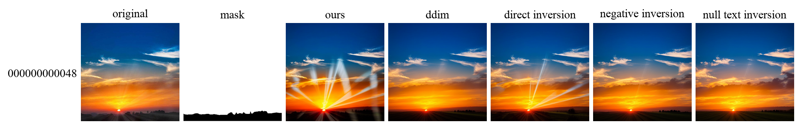
| 지표 ↓ / 모델 → | Ours | w/ DDIM | w/ Direct Inversion | w/ Negative Inversion | w/ Null-text Inversion |
|---|---|---|---|---|---|
| Structure Distance ↑ | 0.6811 | 0.8636 | 0.7222 | 0.8603 | 0.8503 |
| Background Preservation (PSNR ↑) | 31.3618 | 30.2943 | 30.8745 | 31.1020 | 31.7735 |
| Background Preservation (SSIM ↑) | 0.9476 | 0.9438 | 0.9481 | 0.9534 | 0.9592 |
| Background Preservation (LPIPS ↓) | 0.0334 | 0.0294 | 0.0284 | 0.0276 | 0.0263 |
[black] chair in a conference room
→ [blue] chair in a conference room
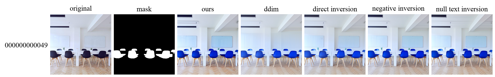
| 지표 ↓ / 모델 → | Ours | w/ DDIM | w/ Direct Inversion | w/ Negative Inversion | w/ Null-text Inversion |
|---|---|---|---|---|---|
| Structure Distance ↑ | 0.9008 | 0.8407 | 0.8797 | 0.8853 | 0.8943 |
| Background Preservation (PSNR ↑) | 25.5848 | 25.2827 | 26.5946 | 26.7954 | 26.5923 |
| Background Preservation (SSIM ↑) | 0.8540 | 0.8607 | 0.8769 | 0.8800 | 0.8713 |
| Background Preservation (LPIPS ↓) | 0.0900 | 0.0902 | 0.0540 | 0.0510 | 0.0591 |
a bird standing on [clods]
→ a bird standing on [eggs]
| 지표 ↓ / 모델 → | Ours | w/ DDIM | w/ Direct Inversion | w/ Negative Inversion | w/ Null-text Inversion |
|---|---|---|---|---|---|
| Structure Distance ↑ | 0.7689 | 0.5877 | 0.6875 | 0.7125 | 0.7133 |
| Background Preservation (PSNR ↑) | 19.8225 | 19.0727 | 20.4312 | 20.4695 | 20.1307 |
| Background Preservation (SSIM ↑) | 0.7897 | 0.7440 | 0.7767 | 0.7903 | 0.7407 |
| Background Preservation (LPIPS ↓) | 0.2170 | 0.3044 | 0.2010 | 0.1936 | 0.2588 |
a painting of [pink and white flowers] in a blue vase
→ a painting of a blue vase
| 지표 ↓ / 모델 → | Ours | w/ DDIM | w/ Direct Inversion | w/ Negative Inversion | w/ Null-text Inversion |
|---|---|---|---|---|---|
| Structure Distance ↑ | 0.9357 | 0.9365 | 0.9354 | 0.9496 | 0.9326 |
| Background Preservation (PSNR ↑) | 22.3422 | 23.7779 | 22.7578 | 23.6595 | 22.9704 |
| Background Preservation (SSIM ↑) | 0.8338 | 0.8386 | 0.8394 | 0.8553 | 0.8479 |
| Background Preservation (LPIPS ↓) | 0.0852 | 0.0664 | 0.0849 | 0.0675 | 0.0776 |
a logo of [bird] shape in a black background
→ a logo of [X] shpae in a black background
| 지표 ↓ / 모델 → | Ours | w/ DDIM | w/ Direct Inversion | w/ Negative Inversion | w/ Null-text Inversion |
|---|---|---|---|---|---|
| Structure Distance ↑ | 0.6261 | 0.6634 | 0.6480 | 0.6515 | 0.6220 |
| Background Preservation (PSNR ↑) | 54.3868 | 62.8494 | 52.4570 | 54.3008 | 57.8466 |
| Background Preservation (SSIM ↑) | 0.9983 | 0.9988 | 0.9983 | 0.9983 | 0.9987 |
| Background Preservation (LPIPS ↓) | 0.0146 | 0.0033 | 0.0167 | 0.0146 | 0.0055 |
a fluffy dog with a blue leash sitting in the [grass]
→ a fluffy dog with a blue leash sitting in the [ground]
| 지표 ↓ / 모델 → | Ours | w/ DDIM | w/ Direct Inversion | w/ Negative Inversion | w/ Null-text Inversion |
|---|---|---|---|---|---|
| Structure Distance ↑ | 0.6061 | 0.5550 | 0.5757 | 0.5566 | 0.4302 |
| Background Preservation (PSNR ↑) | 16.4810 | 17.6776 | 18.4988 | 15.7902 | 15.8473 |
| Background Preservation (SSIM ↑) | 0.6818 | 0.6742 | 0.6777 | 0.6692 | 0.6592 |
| Background Preservation (LPIPS ↓) | 0.2608 | 0.2606 | 0.2548 | 0.2741 | 0.2984 |
a camera and a notebook on a [bed]
→ a camera and a notebook on a [table]
| 지표 ↓ / 모델 → | Ours | w/ DDIM | w/ Direct Inversion | w/ Negative Inversion | w/ Null-text Inversion |
|---|---|---|---|---|---|
| Structure Distance ↑ | 0.9073 | 0.8968 | 0.9300 | 0.9287 | 0.8830 |
| Background Preservation (PSNR ↑) | 20.8362 | 21.0024 | 22.0916 | 21.9478 | 20.1795 |
| Background Preservation (SSIM ↑) | 0.7612 | 0.7529 | 0.7806 | 0.7742 | 0.7404 |
| Background Preservation (LPIPS ↓) | 0.1369 | 0.1539 | 0.1144 | 0.1275 | 0.1483 |
a black dog is looking at the camera in the [snow]
→ a black dog is looking at the camera in the [rain]
| 지표 ↓ / 모델 → | Ours | w/ DDIM | w/ Direct Inversion | w/ Negative Inversion | w/ Null-text Inversion |
|---|---|---|---|---|---|
| Structure Distance ↑ | 0.8732 | 0.9189 | 0.9023 | 0.8631 | 0.7889 |
| Background Preservation (PSNR ↑) | inf | inf | inf | inf | inf |
| Background Preservation (SSIM ↑) | 1.0000 | 1.0000 | 1.0000 | 1.0000 | 1.0000 |
| Background Preservation (LPIPS ↓) | 0.0000 | 0.0000 | 0.0000 | 0.0000 | 0.0000 |
a [meerkat] puppy wrapped in a blue towel
→ a [lion] puppy wrapped in a blue towel
| 지표 ↓ / 모델 → | Ours | w/ DDIM | w/ Direct Inversion | w/ Negative Inversion | w/ Null-text Inversion |
|---|---|---|---|---|---|
| Structure Distance ↑ | 0.6974 | 0.7324 | 0.7274 | 0.6631 | 0.6582 |
| Background Preservation (PSNR ↑) | 19.6575 | 19.9456 | 20.2254 | 19.0378 | 19.2318 |
| Background Preservation (SSIM ↑) | 0.6029 | 0.6994 | 0.4912 | 0.4930 | 0.4862 |
| Background Preservation (LPIPS ↓) | 0.1202 | 0.1230 | 0.1087 | 0.1324 | 0.1448 |
an owl sitting on a branch
→ [a photo of] an owl sitting on a branch
| 지표 ↓ / 모델 → | Ours | w/ DDIM | w/ Direct Inversion | w/ Negative Inversion | w/ Null-text Inversion |
|---|---|---|---|---|---|
| Structure Distance ↑ | 0.8399 | 0.5594 | 0.7579 | 0.8053 | 0.6114 |
| Background Preservation (PSNR ↑) | inf | inf | inf | inf | inf |
| Background Preservation (SSIM ↑) | 1.0000 | 1.0000 | 1.0000 | 1.0000 | 1.0000 |
| Background Preservation (LPIPS ↓) | 0.0000 | 0.0000 | 0.0000 | 0.0000 | 0.0000 |
[purple] tulips in vase
→ [yellow] tulips in vase
| 지표 ↓ / 모델 → | Ours | w/ DDIM | w/ Direct Inversion | w/ Negative Inversion | w/ Null-text Inversion |
|---|---|---|---|---|---|
| Structure Distance ↑ | 0.7352 | 0.8090 | 0.8013 | 0.8208 | 0.6574 |
| Background Preservation (PSNR ↑) | 17.9853 | 18.8280 | 18.8105 | 19.1159 | 18.3901 |
| Background Preservation (SSIM ↑) | 0.3887 | 0.4215 | 0.4194 | 0.4215 | 0.3916 |
| Background Preservation (LPIPS ↓) | 0.3808 | 0.2551 | 0.2644 | 0.2572 | 0.3620 |
a cartoon goat
→ a cartoon goat [face backward]
| 지표 ↓ / 모델 → | Ours | w/ DDIM | w/ Direct Inversion | w/ Negative Inversion | w/ Null-text Inversion |
|---|---|---|---|---|---|
| Structure Distance ↑ | 0.7017 | 0.8451 | 0.8712 | 0.8285 | 0.7019 |
| Background Preservation (PSNR ↑) | 18.9288 | 19.8564 | 20.9112 | 19.6765 | 18.4966 |
| Background Preservation (SSIM ↑) | 0.8159 | 0.8397 | 0.8509 | 0.8498 | 0.8071 |
| Background Preservation (LPIPS ↓) | 0.1453 | 0.1123 | 0.0984 | 0.1167 | 0.1547 |
a [yellow] apple sitting on top of a wooden table
→ a [red] apple sitting on top of a wooden table
| 지표 ↓ / 모델 → | Ours | w/ DDIM | w/ Direct Inversion | w/ Negative Inversion | w/ Null-text Inversion |
|---|---|---|---|---|---|
| Structure Distance ↑ | 0.8368 | 0.8373 | 0.8388 | 0.8377 | 0.8358 |
| Background Preservation (PSNR ↑) | 27.2208 | 27.7663 | 28.1124 | 28.2174 | 27.7093 |
| Background Preservation (SSIM ↑) | 0.9138 | 0.9086 | 0.9391 | 0.9302 | 0.9402 |
| Background Preservation (LPIPS ↓) | 0.0444 | 0.0414 | 0.0360 | 0.0384 | 0.0394 |
a mid [autumn] road lined with trees and leaves
→ a mid [spring] road lined with trees and leaves
| 지표 ↓ / 모델 → | Ours | w/ DDIM | w/ Direct Inversion | w/ Negative Inversion | w/ Null-text Inversion |
|---|---|---|---|---|---|
| Structure Distance ↑ | 0.9421 | 0.9474 | 0.9497 | 0.9454 | 0.9200 |
| Background Preservation (PSNR ↑) | inf | inf | inf | inf | inf |
| Background Preservation (SSIM ↑) | 1.0000 | 1.0000 | 1.0000 | 1.0000 | 1.0000 |
| Background Preservation (LPIPS ↓) | 0.0000 | 0.0000 | 0.0000 | 0.0000 | 0.0000 |
a [rabbit] is sitting in a pile of colorful eggs
→ a [cat] is sitting in a pile of colorful eggs
| 지표 ↓ / 모델 → | Ours | w/ DDIM | w/ Direct Inversion | w/ Negative Inversion | w/ Null-text Inversion |
|---|---|---|---|---|---|
| Structure Distance ↑ | 0.6661 | 0.7071 | 0.7134 | 0.6668 | 0.5613 |
| Background Preservation (PSNR ↑) | 20.4088 | 21.5760 | 20.8385 | 20.9824 | 19.9989 |
| Background Preservation (SSIM ↑) | 0.8236 | 0.8168 | 0.8009 | 0.8391 | 0.7830 |
| Background Preservation (LPIPS ↓) | 0.1455 | 0.1372 | 0.1541 | 0.1396 | 0.2120 |
a vase with some [blooming] flowers in it
→ a vase with some [wilted] flowers in it
| 지표 ↓ / 모델 → | Ours | w/ DDIM | w/ Direct Inversion | w/ Negative Inversion | w/ Null-text Inversion |
|---|---|---|---|---|---|
| Structure Distance ↑ | 0.9463 | 0.9000 | 0.9297 | 0.9289 | 0.8914 |
| Background Preservation (PSNR ↑) | 23.3503 | 26.1669 | 24.8226 | 22.9695 | 22.2858 |
| Background Preservation (SSIM ↑) | 0.9145 | 0.9194 | 0.9290 | 0.9137 | 0.9115 |
| Background Preservation (LPIPS ↓) | 0.0663 | 0.0676 | 0.0604 | 0.0750 | 0.0786 |
a woman in front of a glowing yellow light
→ a woman [riding a lion] in front of a glowing yellow light
| 지표 ↓ / 모델 → | Ours | w/ DDIM | w/ Direct Inversion | w/ Negative Inversion | w/ Null-text Inversion |
|---|---|---|---|---|---|
| Structure Distance ↑ | 0.8821 | 0.8366 | 0.8512 | 0.8593 | 0.6884 |
| Background Preservation (PSNR ↑) | 19.0420 | 18.9824 | 19.1371 | 18.9554 | 18.5668 |
| Background Preservation (SSIM ↑) | 0.4914 | 0.5014 | 0.5007 | 0.5036 | 0.4571 |
| Background Preservation (LPIPS ↓) | 0.2609 | 0.2473 | 0.2505 | 0.2417 | 0.3429 |
a bird is sitting on a branch [with moss]
→ a bird is sitting on a branch
| 지표 ↓ / 모델 → | Ours | w/ DDIM | w/ Direct Inversion | w/ Negative Inversion | w/ Null-text Inversion |
|---|---|---|---|---|---|
| Structure Distance ↑ | 0.8783 | 0.8674 | 0.8554 | 0.8601 | 0.8186 |
| Background Preservation (PSNR ↑) | 21.6911 | 23.0202 | 23.0614 | 22.2379 | 21.0248 |
| Background Preservation (SSIM ↑) | 0.8325 | 0.8381 | 0.8363 | 0.8351 | 0.8083 |
| Background Preservation (LPIPS ↓) | 0.1196 | 0.1230 | 0.1294 | 0.1257 | 0.1772 |
a dalmatian dog laying on the ground
→ [a digital art painting of] a dalmatian dog laying on the ground
| 지표 ↓ / 모델 → | Ours | w/ DDIM | w/ Direct Inversion | w/ Negative Inversion | w/ Null-text Inversion |
|---|---|---|---|---|---|
| Structure Distance ↑ | 0.8140 | 0.8234 | 0.8426 | 0.9224 | 0.8330 |
| Background Preservation (PSNR ↑) | inf | inf | inf | inf | inf |
| Background Preservation (SSIM ↑) | 1.0000 | 1.0000 | 1.0000 | 1.0000 | 1.0000 |
| Background Preservation (LPIPS ↓) | 0.0000 | 0.0000 | 0.0000 | 0.0000 | 0.0000 |
a woman in a [jacket] standing in the rain
→ a woman in a [blouse] standing in the rain
| 지표 ↓ / 모델 → | Ours | w/ DDIM | w/ Direct Inversion | w/ Negative Inversion | w/ Null-text Inversion |
|---|---|---|---|---|---|
| Structure Distance ↑ | 0.8506 | 0.6802 | 0.8467 | 0.8558 | 0.7971 |
| Background Preservation (PSNR ↑) | 19.1825 | 19.8933 | 23.8464 | 23.5437 | 23.6820 |
| Background Preservation (SSIM ↑) | 0.7346 | 0.7240 | 0.7741 | 0.7936 | 0.8035 |
| Background Preservation (LPIPS ↓) | 0.1989 | 0.2309 | 0.1483 | 0.1401 | 0.1412 |
photo of [horses] running in the woods
→ photo of [unicorns] running in the woods
| 지표 ↓ / 모델 → | Ours | w/ DDIM | w/ Direct Inversion | w/ Negative Inversion | w/ Null-text Inversion |
|---|---|---|---|---|---|
| Structure Distance ↑ | 0.7732 | 0.6834 | 0.7011 | 0.7412 | 0.6979 |
| Background Preservation (PSNR ↑) | 22.1448 | 22.2493 | 22.5990 | 22.2703 | 20.9373 |
| Background Preservation (SSIM ↑) | 0.8368 | 0.8390 | 0.8339 | 0.8361 | 0.7632 |
| Background Preservation (LPIPS ↓) | 0.1172 | 0.1300 | 0.1484 | 0.1221 | 0.2018 |
[sea] and house
→ [forest] and house
| 지표 ↓ / 모델 → | Ours | w/ DDIM | w/ Direct Inversion | w/ Negative Inversion | w/ Null-text Inversion |
|---|---|---|---|---|---|
| Structure Distance ↑ | 0.6742 | 0.5966 | 0.6345 | 0.6601 | 0.5249 |
| Background Preservation (PSNR ↑) | 33.4291 | 33.2976 | 33.3405 | 32.5929 | 31.4923 |
| Background Preservation (SSIM ↑) | 0.9863 | 0.9838 | 0.9850 | 0.9836 | 0.9823 |
| Background Preservation (LPIPS ↓) | 0.0140 | 0.0159 | 0.0138 | 0.0162 | 0.0188 |
the city of dresden, germany, europe
→ [a sunny day of] the city of dresden, germany, europe
| 지표 ↓ / 모델 → | Ours | w/ DDIM | w/ Direct Inversion | w/ Negative Inversion | w/ Null-text Inversion |
|---|---|---|---|---|---|
| Structure Distance ↑ | 0.8377 | 0.8694 | 0.8601 | 0.8316 | 0.7900 |
| Background Preservation (PSNR ↑) | inf | inf | inf | inf | inf |
| Background Preservation (SSIM ↑) | 1.0000 | 1.0000 | 1.0000 | 1.0000 | 1.0000 |
| Background Preservation (LPIPS ↓) | 0.0000 | 0.0000 | 0.0000 | 0.0000 | 0.0000 |
an apple with two [faces] on it in a white background
→ an apple with two [hands] on it in a white background
| 지표 ↓ / 모델 → | Ours | w/ DDIM | w/ Direct Inversion | w/ Negative Inversion | w/ Null-text Inversion |
|---|---|---|---|---|---|
| Structure Distance ↑ | 0.9543 | 0.7623 | 0.8565 | 0.9492 | 0.8931 |
| Background Preservation (PSNR ↑) | 47.2033 | 44.3133 | 44.1485 | 45.1208 | 42.6767 |
| Background Preservation (SSIM ↑) | 0.9993 | 0.9988 | 0.9991 | 0.9992 | 0.9993 |
| Background Preservation (LPIPS ↓) | 0.0002 | 0.0006 | 0.0002 | 0.0003 | 0.0003 |
colorful cups
→ [wooden] colorful cups
| 지표 ↓ / 모델 → | Ours | w/ DDIM | w/ Direct Inversion | w/ Negative Inversion | w/ Null-text Inversion |
|---|---|---|---|---|---|
| Structure Distance ↑ | 0.9358 | 0.9203 | 0.9240 | 0.9352 | 0.8163 |
| Background Preservation (PSNR ↑) | 26.5738 | 33.9455 | 35.0358 | 30.8563 | 29.3541 |
| Background Preservation (SSIM ↑) | 0.9859 | 0.9886 | 0.9898 | 0.9890 | 0.9876 |
| Background Preservation (LPIPS ↓) | 0.0123 | 0.0067 | 0.0034 | 0.0054 | 0.0073 |
a [spring] field with trees and a blue sky
→ a [autumn] field with trees and a blue sky
| 지표 ↓ / 모델 → | Ours | w/ DDIM | w/ Direct Inversion | w/ Negative Inversion | w/ Null-text Inversion |
|---|---|---|---|---|---|
| Structure Distance ↑ | 0.9061 | 0.9297 | 0.8989 | 0.8996 | 0.8698 |
| Background Preservation (PSNR ↑) | 26.7577 | 24.2728 | 19.3742 | 20.2321 | 16.8176 |
| Background Preservation (SSIM ↑) | 0.9518 | 0.9489 | 0.9231 | 0.9267 | 0.9016 |
| Background Preservation (LPIPS ↓) | 0.0296 | 0.0444 | 0.0801 | 0.0715 | 0.1100 |
a mountain is covered in [clouds and] snow
→ a mountain is covered in snow
| 지표 ↓ / 모델 → | Ours | w/ DDIM | w/ Direct Inversion | w/ Negative Inversion | w/ Null-text Inversion |
|---|---|---|---|---|---|
| Structure Distance ↑ | 0.8272 | 0.8148 | 0.7841 | 0.8074 | 0.7812 |
| Background Preservation (PSNR ↑) | 25.9843 | 25.3216 | 23.8969 | 26.0149 | 25.5638 |
| Background Preservation (SSIM ↑) | 0.8658 | 0.8667 | 0.8535 | 0.8571 | 0.8473 |
| Background Preservation (LPIPS ↓) | 0.0786 | 0.0713 | 0.0756 | 0.0841 | 0.0957 |
a woman with [flowers] around her face
→ a woman with [monster] around her face
| 지표 ↓ / 모델 → | Ours | w/ DDIM | w/ Direct Inversion | w/ Negative Inversion | w/ Null-text Inversion |
|---|---|---|---|---|---|
| Structure Distance ↑ | 0.9540 | 0.9096 | 0.9305 | 0.9612 | 0.8989 |
| Background Preservation (PSNR ↑) | 28.3759 | 31.5593 | 31.2560 | 29.2387 | 29.8034 |
| Background Preservation (SSIM ↑) | 0.9750 | 0.9774 | 0.9770 | 0.9749 | 0.9741 |
| Background Preservation (LPIPS ↓) | 0.0167 | 0.0143 | 0.0135 | 0.0168 | 0.0151 |
a painting of a cup with a [smoke] coming out of it
→ a painting of a cup with a [flower] coming out of it
| 지표 ↓ / 모델 → | Ours | w/ DDIM | w/ Direct Inversion | w/ Negative Inversion | w/ Null-text Inversion |
|---|---|---|---|---|---|
| Structure Distance ↑ | 0.8790 | 0.8763 | 0.8687 | 0.8496 | 0.7594 |
| Background Preservation (PSNR ↑) | 17.7597 | 19.5723 | 19.5841 | 19.0907 | 17.5033 |
| Background Preservation (SSIM ↑) | 0.7188 | 0.7842 | 0.7778 | 0.7670 | 0.7175 |
| Background Preservation (LPIPS ↓) | 0.2268 | 0.1868 | 0.1934 | 0.2064 | 0.2369 |
a painting of a [cabin] in the snow with mountains in the background
→ a painting of a [car] in the snow with mountains in the background
| 지표 ↓ / 모델 → | Ours | w/ DDIM | w/ Direct Inversion | w/ Negative Inversion | w/ Null-text Inversion |
|---|---|---|---|---|---|
| Structure Distance ↑ | 0.9170 | 0.8643 | 0.8679 | 0.8831 | 0.6652 |
| Background Preservation (PSNR ↑) | 16.9052 | 17.9453 | 17.4836 | 16.9357 | 16.4109 |
| Background Preservation (SSIM ↑) | 0.5858 | 0.5774 | 0.5725 | 0.5837 | 0.5611 |
| Background Preservation (LPIPS ↓) | 0.2033 | 0.2066 | 0.2106 | 0.2035 | 0.2471 |
ocean with [clouds] in the sky
→ ocean with [stars] in the sky
| 지표 ↓ / 모델 → | Ours | w/ DDIM | w/ Direct Inversion | w/ Negative Inversion | w/ Null-text Inversion |
|---|---|---|---|---|---|
| Structure Distance ↑ | 0.8028 | 0.7849 | 0.7974 | 0.7951 | 0.7330 |
| Background Preservation (PSNR ↑) | 25.9663 | 26.8149 | 26.4343 | 26.7501 | 26.3626 |
| Background Preservation (SSIM ↑) | 0.8123 | 0.8222 | 0.8216 | 0.8194 | 0.8092 |
| Background Preservation (LPIPS ↓) | 0.0612 | 0.0493 | 0.0536 | 0.0526 | 0.0563 |
a man walking in a [town] with mountains in the background
→ a man walking in a [city] with mountains in the background
| 지표 ↓ / 모델 → | Ours | w/ DDIM | w/ Direct Inversion | w/ Negative Inversion | w/ Null-text Inversion |
|---|---|---|---|---|---|
| Structure Distance ↑ | 0.8414 | 0.8268 | 0.8235 | 0.8031 | 0.5893 |
| Background Preservation (PSNR ↑) | inf | inf | inf | inf | inf |
| Background Preservation (SSIM ↑) | 1.0000 | 1.0000 | 1.0000 | 1.0000 | 1.0000 |
| Background Preservation (LPIPS ↓) | 0.0000 | 0.0000 | 0.0000 | 0.0000 | 0.0000 |
a [cat] is shown in a low polygonal style
→ a [fox] is shown in a low polygonal style
| 지표 ↓ / 모델 → | Ours | w/ DDIM | w/ Direct Inversion | w/ Negative Inversion | w/ Null-text Inversion |
|---|---|---|---|---|---|
| Structure Distance ↑ | 0.8981 | 0.9005 | 0.9027 | 0.8868 | 0.8273 |
| Background Preservation (PSNR ↑) | 25.9623 | 28.6241 | 29.0278 | 24.3521 | 23.3895 |
| Background Preservation (SSIM ↑) | 0.9880 | 0.9913 | 0.9920 | 0.9854 | 0.9831 |
| Background Preservation (LPIPS ↓) | 0.0185 | 0.0087 | 0.0065 | 0.0225 | 0.0294 |
[mushrooms on] a branch in the forest
→ a branch in the forest
| 지표 ↓ / 모델 → | Ours | w/ DDIM | w/ Direct Inversion | w/ Negative Inversion | w/ Null-text Inversion |
|---|---|---|---|---|---|
| Structure Distance ↑ | 0.8999 | 0.7946 | 0.7733 | 0.8115 | 0.7486 |
| Background Preservation (PSNR ↑) | 20.8284 | 21.2757 | 21.1269 | 21.4706 | 21.2393 |
| Background Preservation (SSIM ↑) | 0.6470 | 0.6266 | 0.6379 | 0.6645 | 0.6476 |
| Background Preservation (LPIPS ↓) | 0.1852 | 0.1688 | 0.1744 | 0.1589 | 0.1744 |
a cute dog holding a [red] heart
→ a cute dog holding a [pink] heart
| 지표 ↓ / 모델 → | Ours | w/ DDIM | w/ Direct Inversion | w/ Negative Inversion | w/ Null-text Inversion |
|---|---|---|---|---|---|
| Structure Distance ↑ | 0.9254 | 0.9237 | 0.9224 | 0.9122 | 0.8846 |
| Background Preservation (PSNR ↑) | 18.2142 | 19.2295 | 18.9393 | 18.5898 | 17.8817 |
| Background Preservation (SSIM ↑) | 0.6657 | 0.6843 | 0.6832 | 0.6729 | 0.6555 |
| Background Preservation (LPIPS ↓) | 0.2267 | 0.2349 | 0.2279 | 0.2189 | 0.2441 |
a water droplet hangs from a string of lights
→ a water droplet hangs from a string of [red] lights
| 지표 ↓ / 모델 → | Ours | w/ DDIM | w/ Direct Inversion | w/ Negative Inversion | w/ Null-text Inversion |
|---|---|---|---|---|---|
| Structure Distance ↑ | 0.7601 | 0.7018 | 0.7299 | 0.7561 | 0.7500 |
| Background Preservation (PSNR ↑) | 21.7972 | 20.5940 | 21.5886 | 23.0808 | 22.1881 |
| Background Preservation (SSIM ↑) | 0.9470 | 0.9459 | 0.9502 | 0.9557 | 0.9501 |
| Background Preservation (LPIPS ↓) | 0.0713 | 0.0695 | 0.0624 | 0.0547 | 0.0592 |
two [red and white] toy gnomes are sitting on a snow covered surface
→ two [blue and green] toy gnomes are sitting on a snow covered surface
| 지표 ↓ / 모델 → | Ours | w/ DDIM | w/ Direct Inversion | w/ Negative Inversion | w/ Null-text Inversion |
|---|---|---|---|---|---|
| Structure Distance ↑ | 0.7790 | 0.7054 | 0.7258 | 0.7420 | 0.7319 |
| Background Preservation (PSNR ↑) | 21.3535 | 20.7850 | 21.5226 | 20.1152 | 19.9079 |
| Background Preservation (SSIM ↑) | 0.9074 | 0.9102 | 0.9126 | 0.9030 | 0.8837 |
| Background Preservation (LPIPS ↓) | 0.0854 | 0.0868 | 0.0861 | 0.0993 | 0.1177 |
wolf howling at the moon with a outline of a [wolf]
→ wolf howling at the moon with a outline of a [person]
| 지표 ↓ / 모델 → | Ours | w/ DDIM | w/ Direct Inversion | w/ Negative Inversion | w/ Null-text Inversion |
|---|---|---|---|---|---|
| Structure Distance ↑ | 0.7754 | 0.7597 | 0.8446 | 0.8541 | 0.8309 |
| Background Preservation (PSNR ↑) | 34.0398 | 34.2912 | 33.8439 | 33.4483 | 32.0625 |
| Background Preservation (SSIM ↑) | 0.9908 | 0.9936 | 0.9919 | 0.9909 | 0.9913 |
| Background Preservation (LPIPS ↓) | 0.0080 | 0.0074 | 0.0084 | 0.0079 | 0.0086 |
the [almond] tree is blooming in the spring
→ the [violet] tree is blooming in the spring
| 지표 ↓ / 모델 → | Ours | w/ DDIM | w/ Direct Inversion | w/ Negative Inversion | w/ Null-text Inversion |
|---|---|---|---|---|---|
| Structure Distance ↑ | 0.8918 | 0.8804 | 0.8752 | 0.8855 | 0.8782 |
| Background Preservation (PSNR ↑) | 24.4292 | 24.3281 | 25.3981 | 24.6787 | 23.8758 |
| Background Preservation (SSIM ↑) | 0.9689 | 0.9717 | 0.9731 | 0.9710 | 0.9636 |
| Background Preservation (LPIPS ↓) | 0.0299 | 0.0242 | 0.0223 | 0.0274 | 0.0363 |
a jockey rides a [horse] on a grassy field
→ a jockey rides a [dragon] on a grassy field
| 지표 ↓ / 모델 → | Ours | w/ DDIM | w/ Direct Inversion | w/ Negative Inversion | w/ Null-text Inversion |
|---|---|---|---|---|---|
| Structure Distance ↑ | 0.9037 | 0.8616 | 0.9106 | 0.9152 | 0.7991 |
| Background Preservation (PSNR ↑) | 18.0293 | 19.7715 | 19.2883 | 18.4946 | 16.3458 |
| Background Preservation (SSIM ↑) | 0.7987 | 0.8003 | 0.7862 | 0.8197 | 0.7462 |
| Background Preservation (LPIPS ↓) | 0.1658 | 0.1737 | 0.1811 | 0.1549 | 0.2474 |
a plate with rice, [lemon] slices and fish
→ a plate with rice, [apple] slices and fish
| 지표 ↓ / 모델 → | Ours | w/ DDIM | w/ Direct Inversion | w/ Negative Inversion | w/ Null-text Inversion |
|---|---|---|---|---|---|
| Structure Distance ↑ | 0.9106 | 0.8958 | 0.8956 | 0.8971 | 0.8516 |
| Background Preservation (PSNR ↑) | 17.4002 | 18.2159 | 17.8923 | 17.6766 | 17.2078 |
| Background Preservation (SSIM ↑) | 0.4436 | 0.4327 | 0.4250 | 0.4324 | 0.4023 |
| Background Preservation (LPIPS ↓) | 0.1994 | 0.2156 | 0.2340 | 0.2154 | 0.2782 |
two [red] berries on a tree branch with a blue sky in the background
→ two [purple] berries on a tree branch with a blue sky in the background
| 지표 ↓ / 모델 → | Ours | w/ DDIM | w/ Direct Inversion | w/ Negative Inversion | w/ Null-text Inversion |
|---|---|---|---|---|---|
| Structure Distance ↑ | 0.8686 | 0.8606 | 0.8580 | 0.8823 | 0.8654 |
| Background Preservation (PSNR ↑) | 21.1010 | 20.4055 | 20.4811 | 20.5280 | 19.1185 |
| Background Preservation (SSIM ↑) | 0.9227 | 0.9262 | 0.9277 | 0.9192 | 0.8966 |
| Background Preservation (LPIPS ↓) | 0.0732 | 0.0716 | 0.0712 | 0.0733 | 0.1078 |
a drawing of a woman with a towel on her head
→ a drawing of a woman with a towel on her head [and a dress on her body]
| 지표 ↓ / 모델 → | Ours | w/ DDIM | w/ Direct Inversion | w/ Negative Inversion | w/ Null-text Inversion |
|---|---|---|---|---|---|
| Structure Distance ↑ | 0.8744 | 0.8695 | 0.8900 | 0.9049 | 0.9027 |
| Background Preservation (PSNR ↑) | 52.0090 | 45.1848 | 49.4043 | 47.1487 | 45.1643 |
| Background Preservation (SSIM ↑) | 0.9999 | 0.9998 | 0.9995 | 0.9998 | 0.9998 |
| Background Preservation (LPIPS ↓) | 0.0000 | 0.0004 | 0.0003 | 0.0002 | 0.0004 |
a girl sitting at a table with [pizza] and drinks
→ a girl sitting at a table with [noodles] and drinks
| 지표 ↓ / 모델 → | Ours | w/ DDIM | w/ Direct Inversion | w/ Negative Inversion | w/ Null-text Inversion |
|---|---|---|---|---|---|
| Structure Distance ↑ | 0.6458 | 0.6720 | 0.7066 | 0.6649 | 0.5604 |
| Background Preservation (PSNR ↑) | 16.9887 | 17.3434 | 17.5766 | 17.2668 | 16.1070 |
| Background Preservation (SSIM ↑) | 0.5061 | 0.5047 | 0.5374 | 0.5064 | 0.4406 |
| Background Preservation (LPIPS ↓) | 0.4104 | 0.3965 | 0.3529 | 0.4070 | 0.5003 |
lilas and book on [wooden] surface
→ lilas and book on [glass] surface
| 지표 ↓ / 모델 → | Ours | w/ DDIM | w/ Direct Inversion | w/ Negative Inversion | w/ Null-text Inversion |
|---|---|---|---|---|---|
| Structure Distance ↑ | 0.8668 | 0.8105 | 0.8278 | 0.8502 | 0.7465 |
| Background Preservation (PSNR ↑) | 20.3994 | 18.9514 | 19.8877 | 20.4132 | 19.6639 |
| Background Preservation (SSIM ↑) | 0.7659 | 0.7247 | 0.7561 | 0.7631 | 0.7375 |
| Background Preservation (LPIPS ↓) | 0.1548 | 0.1888 | 0.1566 | 0.1458 | 0.1857 |
a [collie dog] is sitting on a bed
→ a [garfield cat] is sitting on a sofa
| 지표 ↓ / 모델 → | Ours | w/ DDIM | w/ Direct Inversion | w/ Negative Inversion | w/ Null-text Inversion |
|---|---|---|---|---|---|
| Structure Distance ↑ | 0.5341 | 0.4319 | 0.4191 | 0.4880 | 0.2790 |
| Background Preservation (PSNR ↑) | 25.7496 | 28.5138 | 27.3449 | 26.8736 | 24.0151 |
| Background Preservation (SSIM ↑) | 0.9662 | 0.9692 | 0.9636 | 0.9586 | 0.9550 |
| Background Preservation (LPIPS ↓) | 0.0359 | 0.0223 | 0.0285 | 0.0365 | 0.0522 |
a cat is sitting on a [red] blanket
→ a cat is sitting on a [blue] blanket
| 지표 ↓ / 모델 → | Ours | w/ DDIM | w/ Direct Inversion | w/ Negative Inversion | w/ Null-text Inversion |
|---|---|---|---|---|---|
| Structure Distance ↑ | 0.8913 | 0.8905 | 0.8945 | 0.8878 | 0.7028 |
| Background Preservation (PSNR ↑) | 18.1523 | 19.6554 | 18.5011 | 18.0369 | 17.0458 |
| Background Preservation (SSIM ↑) | 0.7508 | 0.7689 | 0.7523 | 0.7370 | 0.6780 |
| Background Preservation (LPIPS ↓) | 0.1712 | 0.1529 | 0.1614 | 0.1716 | 0.2852 |
a painting of a fairy with green wings holding a [glowing jar]
→ a painting of a fairy with green wings holding a [crystal ball]
| 지표 ↓ / 모델 → | Ours | w/ DDIM | w/ Direct Inversion | w/ Negative Inversion | w/ Null-text Inversion |
|---|---|---|---|---|---|
| Structure Distance ↑ | 0.8960 | 0.8845 | 0.8918 | 0.8777 | 0.6995 |
| Background Preservation (PSNR ↑) | 20.0830 | 21.3344 | 21.1532 | 21.0834 | 19.0897 |
| Background Preservation (SSIM ↑) | 0.5817 | 0.5458 | 0.5714 | 0.5993 | 0.5004 |
| Background Preservation (LPIPS ↓) | 0.1964 | 0.1947 | 0.1939 | 0.1927 | 0.3214 |
a [white and black] photo of bride and groom embrace in the woods
→ a [colorful and beautiful] photo of bride and groom embrace in the woods
| 지표 ↓ / 모델 → | Ours | w/ DDIM | w/ Direct Inversion | w/ Negative Inversion | w/ Null-text Inversion |
|---|---|---|---|---|---|
| Structure Distance ↑ | 0.8758 | 0.8668 | 0.8633 | 0.8920 | 0.8335 |
| Background Preservation (PSNR ↑) | inf | inf | inf | inf | inf |
| Background Preservation (SSIM ↑) | 1.0000 | 1.0000 | 1.0000 | 1.0000 | 1.0000 |
| Background Preservation (LPIPS ↓) | 0.0000 | 0.0000 | 0.0000 | 0.0000 | 0.0000 |
a vase of colorful flowers on a [wooden] table
→ a vase of colorful flowers on a [plastic] table
| 지표 ↓ / 모델 → | Ours | w/ DDIM | w/ Direct Inversion | w/ Negative Inversion | w/ Null-text Inversion |
|---|---|---|---|---|---|
| Structure Distance ↑ | 0.8377 | 0.8341 | 0.8982 | 0.8436 | 0.7699 |
| Background Preservation (PSNR ↑) | 20.6861 | 19.9014 | 20.5606 | 20.8159 | 20.1174 |
| Background Preservation (SSIM ↑) | 0.7934 | 0.7871 | 0.7917 | 0.7927 | 0.7794 |
| Background Preservation (LPIPS ↓) | 0.1141 | 0.1065 | 0.0977 | 0.1132 | 0.1300 |
a light bulb hanging from a wire with [sky] in the background
→ a light bulb hanging from a wire with [grass] in the background
| 지표 ↓ / 모델 → | Ours | w/ DDIM | w/ Direct Inversion | w/ Negative Inversion | w/ Null-text Inversion |
|---|---|---|---|---|---|
| Structure Distance ↑ | 0.9110 | 0.9031 | 0.8772 | 0.9203 | 0.8933 |
| Background Preservation (PSNR ↑) | 29.0082 | 27.5189 | 25.2241 | 31.2448 | 28.4000 |
| Background Preservation (SSIM ↑) | 0.9594 | 0.9375 | 0.9253 | 0.9559 | 0.9519 |
| Background Preservation (LPIPS ↓) | 0.0438 | 0.0638 | 0.0738 | 0.0375 | 0.0522 |
a painting of a woman holding a [pink flower]
→ a painting of a woman holding a [teddy bear]
| 지표 ↓ / 모델 → | Ours | w/ DDIM | w/ Direct Inversion | w/ Negative Inversion | w/ Null-text Inversion |
|---|---|---|---|---|---|
| Structure Distance ↑ | 0.7937 | 0.7461 | 0.7651 | 0.7405 | 0.6795 |
| Background Preservation (PSNR ↑) | 22.3441 | 22.3345 | 22.3641 | 21.3639 | 20.5230 |
| Background Preservation (SSIM ↑) | 0.6411 | 0.6451 | 0.6444 | 0.6152 | 0.5987 |
| Background Preservation (LPIPS ↓) | 0.2464 | 0.2500 | 0.2550 | 0.3026 | 0.3643 |
a woman in black holding an umbrella walks through a [field]
→ a woman in black holding an umbrella walks through a [forest]
| 지표 ↓ / 모델 → | Ours | w/ DDIM | w/ Direct Inversion | w/ Negative Inversion | w/ Null-text Inversion |
|---|---|---|---|---|---|
| Structure Distance ↑ | 0.9056 | 0.9008 | 0.8901 | 0.8931 | 0.8003 |
| Background Preservation (PSNR ↑) | 34.9096 | 35.2998 | 34.9691 | 34.7553 | 33.1356 |
| Background Preservation (SSIM ↑) | 0.9629 | 0.9689 | 0.9708 | 0.9605 | 0.9491 |
| Background Preservation (LPIPS ↓) | 0.0357 | 0.0331 | 0.0319 | 0.0352 | 0.0479 |